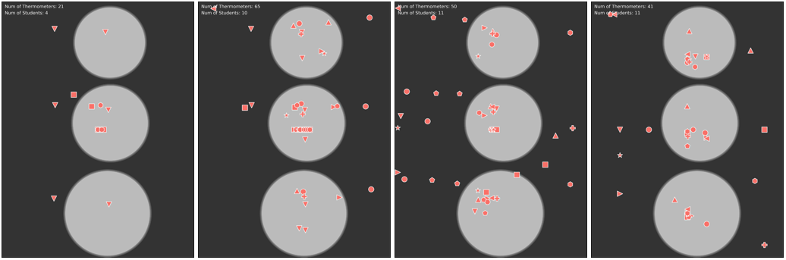

Learning Analytics and Visualization
Techniques like herd diagrams turn raw process data into clear pictures of how a group of students actually moves through an online investigation.
Learning Analytics and Visualization
Learning analytics is an important tool used by IFI researchers to assess and evaluate student learning. IFI develops unique techniques for implementing learning analytics in our innovative products, described as follows.
Herd Analytics
Herd analytics refers to a class of learning analytics developed at IFI to analyze and visualize the process data from a group of students in online learning. Students' process data are aggregated to generate a herd diagram for visualizing the behavior of the whole group during a remote experiment. We refer to this kind of point cloud visualization as the herd diagram as it shows the dynamic behavior of a group of students in a given problem space where they explore with or without the guidance of an instructor. Herd diagrams allow researchers to use clustering to identify subgroups of students or actions that may need to be targeted with instructions specific to those subgroups. If used in a dashboard, a herd diagram can provide an intuitive representation to help the teacher spot students who may have gone astray and respond accordingly.

The behavior of the “herd” eventually converged to an expected pattern, which shows three clusters of thermometers on top of the petri dishes and a random distribution of the fourth thermometer used to monitor the ambient temperature In each diagram, the thermometers of each student are represented by a type of symbol. The results of this analysis have been published in IEEE Transactions on Learning Technologies.
← Back to home